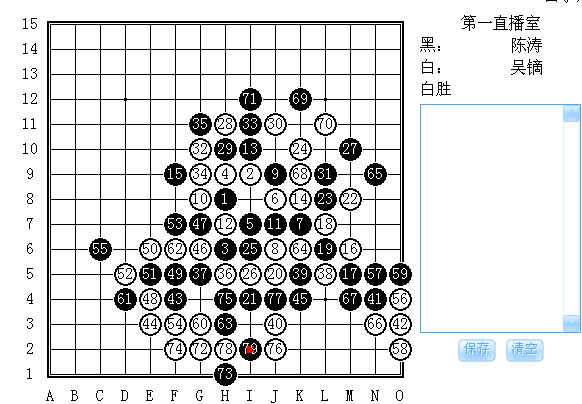
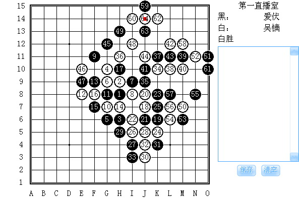
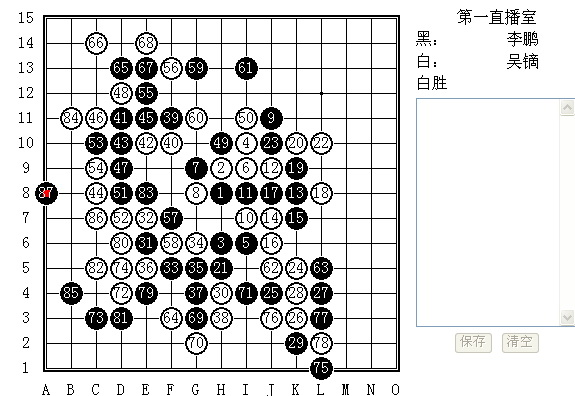

吴镝的“好运门”究竟有多宽——2008全国锦标赛
#1 吴镝的“好运门”究竟有多宽——2008全国锦标赛作者：无聊 发表时间：2008-12-13 18:34:46
看来吴镝今年到石家庄参赛真是对极了，石家庄成了他的福地了。上半年的全国团体赛，吴镝获得最佳一台称号，其中，和段然的一局几乎已经无法取胜了，结果段然在最关键的一手防错，吴镝取胜；和樊星岑的一局，樊同学的局面已经必胜，几乎是初段、二段的题目，结果，小樊同学居然低级错误，让大家目瞪口呆，吴镝再次取胜。于是乎，开始觉得这家伙的运气真好，如同去年参加世界杯锦标赛一样。 看了这次全锦赛前三轮的对局，更是觉得吴镝的“运气门”够宽的。一个棋手要成名，不仅需要实力，还需要时机、运气，尤其是后者，非常虚但又非常实，真的是讲不清道不明的。第一局，吴镝后手执白（明星局）对陈涛。要说黑棋下的确实不怎么样，黑15开始失先，然后就是一路苦防，黑27看似强硬，实则已经是强弩之末了。接下去的几手，吴镝下的确实不错，攻击线路清晰，大局观也很明确。白40黑已经无解了，虽然把左右的四都冲了，三三是抓不到了，但是白棋此时只需要单下48位做杀即可，黑再也没得防了。不过，通过对局记录来看，猜想吴镝是有了一个打算抓黑棋长连的想法，此后一路走法走的刚猛，不过却漏算了黑上面存在一个反。白68是无奈之招，黑69这么下倒也不是败招，问题是黑71让大家大跌眼镜。此时黑71只要冷静的在74位补一手，白在下方就无杀了，那么这盘棋很有可能以和棋告终。可是......当对手面对一线生机的时候，却很谦虚地推脱，然后一定要求吴镝抓他的长连。于是只能感叹吴镝的好运气了。  第二局，吴镝后手（瑞星）对爱伏。尽管对爱伏的参赛身份和资格颇有争议，但是对于他和吴镝之战倒还是抱着很大兴趣。吴镝的白12选择了一个老变化，按照爱伏的实战来看，他一开始应该是抱着“和为贵”的策略在下的，整盘对局黑棋很不积极。进入40手时大多数人都认为当时的局面态势均衡，应该和棋的可能性比较大，可是没想到，黑45手爱伏下的有点过分了，居然不睬白棋。于是，黑47起开始一路跟防，但已经晚了，白50后黑无防了。于是继续感慨中。  第三轮，吴镝继续后手（瑞星）同北京后起之秀李鹏作战。白12选择了一个很古老的下法，或许是觉得李鹏可能对老变化不熟悉吧。不过要说李鹏下的还真不错，黑棋牢牢把握住先手，而且迅速确立优势。白34必败，就在观众们觉得吴镝要挂了的时候，李鹏犯了第一个错误，黑棋取胜的次序走错了（正确的下法是35-37、36-38、37-36、38-35、39-58），于是局部无杀了。不过李鹏还是比较老道的，马上转身上面做棋。吴镝在上面的防御也出现了问题，白44又是一次必败，结果李鹏居然再次放走绝好机会，47-65，白无防了。可惜可惜。老话说，当机会给你你却不去抓住的时候，好运就离开你了。于是李鹏的结局也是输棋。  到这个时候，恐怕不由人不为吴镝的“好运门”而感叹。实力是重要滴，但是运气似乎更要紧。不晓得这扇“好运门”究竟有多宽。此外，不知道吴镝是否准备拿7盘白棋，然后来个7连胜呢？！现在看来这个目标有很大可能实现了。 |
［ 有志青年 于 2008-12-13 20:40:47 时奖励此帖[金币加 20 威望加1］
#2 Re:吴镝的“好运门”究竟有多宽作者：萧寒寒 发表时间：2008-12-13 18:45:55
看不见图片
#3 Re:吴镝的“好运门”究竟有多宽作者：越狱行辕 发表时间：2008-12-13 19:51:47
 貌似楼主对吴镝意见很大啊
貌似楼主对吴镝意见很大啊#4 Re:Re:吴镝的“好运门”究竟有多宽作者：闫荣辉 发表时间：2008-12-13 19:52:56
引用：
原文由 越狱行辕 发表于 2008-12-13 19:51:47 :
☆此文系转载，原作者是：顾炜
不是楼主写的哦！
#5 Re:吴镝的“好运门”究竟有多宽作者：上海PL囡囡 发表时间：2008-12-15 10:11:19
吴镝对李鹏那盘，了解得知原来李鹏黑棋21，23北京那边都摆过的，当时真把吴镝吓了一跳，不过吴镝发现后边李鹏走的中盘太莫名其妙，所以44手时明明算到黑上边简单VCT，就是不去防，结果真把李鹏吓倒了。如果44真的去防黑，这盘手不定就和了。这盘不仅体现吴镝的棋力更体现他对心里战术的理解，但绝不是体现运气。
#6 Re:吴镝的“好运门”究竟有多宽作者：行云流水 发表时间：2008-12-15 10:20:02
原文由 越狱行辕 发表于 2008-12-13 19:51:47 :貌似楼主对吴镝意见很大啊
文章对事不对人。只是对吴镝同志这三轮的棋发表个人看法。所以，“貌似”一说并不成立。：）
#7 Re:吴镝的“好运门”究竟有多宽作者：行云流水 发表时间：2008-12-15 10:33:26
这盘不仅体现吴镝的棋力更体现他对心里战术的理解，但绝不是体现运气。
原文探讨的是一种介乎于虚和实之间的东西——运气。对5楼讲的现场情况的确不了解。不过，个人以为心理战术分多种，而这轮实战吴镝采用的是基于危险基础上的心理，近乎于一个“赌”的心态。因此，5楼讲的“体现棋力”就很值得商榷，如果换成体现“预见能力”，可以预见到黑必胜情况下对手也胜不了，那倒是可以一说。个人以为，如果出现对方已经必胜棋型了，怎么防都是死的情况，那么选择一个最为复杂的防或者以不防为防倒也不失为良策。但是如果在可以防却不防，给别人必胜的话，是存在很大风险的，毕竟对手不是菜鸟，万一对方算出了呢？岂非就白白失去一分了。因此，运用心理战术比较得当这个同意，但是依然认为运气还是很重要的。当然仅仅是个人看法。
#8 Re:吴镝的“好运门”究竟有多宽作者：土豆 发表时间：2008-12-15 13:14:35
囡囡讲的多少有点莫名其妙了。大鱼实力强劲那是自然，不过单就这三盘胜利而言，还真有那么一点点运气成分，：）。大鱼对aivo那盘，aivo心态正点应该就和了。
在这里就反省一下我的这盘对局吧。大鱼开局，我交换执黑。赛前我曾对D11各十二手都做了一番准备。当时就注意到实战这个大鱼曾多次采用的12手。然后针对下面两个常见的14分别做了一点研究，并比较出优劣。对于本盘那个14，16，当时分析的结果认为17外防的变化白将有强攻并可转身。而我实战那样的17-19-21，后23跳盖眠三的变化，近乎可以必胜（当时认为22单盖1 3 21眠三为强防）！来时火车上和冬瓜他们也简单交流一下此路走法。
动身至开赛前两天，一直发烧。多亏冬瓜和姚老良药相助。可惜两夜都没咋睡好。在此还是要感谢所有帮助我关心我的朋友们。
对大鱼之前一轮对阵周可鼎，拼了将近3个小时，剩不到3分钟时才成杀。短暂休整对大鱼，多少感觉有点力不从心。不过鱼是我欣赏的的几个棋手之一，一直很期待与他的交锋。他开瑞，我换，他诧异。本次比赛除了对手交换了两盘外，其他我全部交换执黑。顽固的认为，五子的本质，是体现执黑者的思想，要有所成，必须具备高超的执黑能力（不过似乎本次比赛的前几名都是偏向防守风格的：）。大鱼14没走到他曾多次尝试的双跳2而是走了这个我认为并不很好的14手，我便迅速行至21，拍子快且狠，力争气势上压倒他，施以威慑。大鱼费解，疑惑并可爱地看着我，我无辜的回望他。鱼开始计算，之后微笑，之后嘟囔句：中套，之后便是孤独漫长的思考。期间他不断变化姿势，身体象要完全倾倒在棋盘之上。随着计算的深入，他的面庞开始变换色彩，象极入秋的树叶。他口中不断喃喃自语，“奥~~~”“恩！恩！”，还自我鼓励般的点点头。鱼头左右摇摆，精密地扫描棋盘的每个角落，目光时远时近。他的一双大眼睛在大镜片后扑闪着，仿佛看到了最骇人的情节 ，又仿佛看到了这世界上最有趣的秘密。一切让我恍惚有了看他比看棋更有意思的感觉。
这步棋，大鱼想了1个小时！ 这个局部确实难于防守。而他实战的22 24，也正是我当时计算的一种白交换消去后回防的方式。只是这里我犯了本盘的第一个错误。我只单纯的注意到白可以通过这个局部交换后消解黑优势的手段，却没注意到黑可以25此时若跳盖白眠三，可以把白局部钉死，消弭于无形。第一个做必胜的机会错过。24后，大鱼起身抽烟。我算到觉得另一侧优势巨大，只需简单处理好这个局部即可。25跟了一手。26后白局部出杀，27黑处理掉，28防要点。至此，白围魏救赵计划成功。这个次序下来开始对自己前面的草率应对心生悔恨。31强点。但此时该局部已少了13 15 19那个眠三兄弟配合，局部能否做出必胜已未可知。32！大鱼应该已经意识到了黑局部的强大，便试图切断黑上下，并制造牵制。但我计算的结果是它并不强。33事实上的必胜！坦白讲，走出33时，我只是算到了多路杀法，并没有终结（否则就不会出现35的漏杀）。事实上我完全可以在时间占优的情况下算的更加精细。大鱼34象32一样应对很快。他的表情也显得很轻松。 难道该34后黑无杀了？我开始有些怀疑是否哪步出了问题。其实实战34不过是局部最强防而已，黑杀依旧。我反复计算杀法，包括正确的那个先斜活3的线路。但当时却算到那样交换后白有个“防点”，郁闷，无果。随着时间的流去，心态变得急躁起来。最后果断决定放弃算杀，交换后去下一战场二次革命！带着沮丧的心情，走了35 37交换后，39局部定型的次序。36，38必然。39的选择又花费了大量时间。在不失先手的前提下，要能和借用衔接，又要能尽可能的压缩白局部的空间，不给白反扑提供机会。实战39基本满足。黑接下有一步做成必胜的手段。
#9 Re:吴镝的“好运门”究竟有多宽作者：小红眼镜 发表时间：2008-12-15 13:50:32
 无论如何都全力支持俺家土豆SF~
无论如何都全力支持俺家土豆SF~#10 Re:吴镝的“好运门”究竟有多宽作者：隐藏菜系 发表时间：2008-12-15 14:07:47
兵法云，“虚则实之,实则虚之;虚虚实实,实实虚虚”，如果大鱼当时的实战心理真如上海PL囡囡所说，那么大鱼真可谓极为强大，因为一个真正强悍的棋手，必须是在棋力和实战心理上都强大的，（我说的心理强大是指他的魄力和决断力，）但是关于“运气”一说，完全没必要争论，因为心理战的结果，相当大程度上依赖于运气，事实上，且先不论古代，就现代来说，各种竞技活动中心理战付出的代价都是惨烈的，成功的比例并不大，也只有那些成功的心理战取胜的例子，才为人们所熟知，人们讨论所谓“心理战”的时候，也常常只能局限于从最终的结果来分析，至于到底当时该不该这样用，谁也说不准，因为“运气”这个东西本就飘忽不定，也许就决定于当事者的一念之差，“是”和“否”的概率几乎是55开，并无”一定“之说。啊。#11 Re:吴镝的“好运门”究竟有多宽作者：隐藏菜系 发表时间：2008-12-15 14:09:39
字体怎么路七八糟的。。#12 Re:吴镝的“好运门”究竟有多宽作者：土豆 发表时间：2008-12-15 14:21:52
40防住要点。对白棋来讲，局面已度过最危险的时期，防守相对简单许多。黑5 21 37一直没动，是想保留一个黑活3白必挡上面的变化。这个时候，我突然感觉比较疲累，就提出和棋申请。抛开进程而言，和大鱼和棋也是可接受的结果。这也是我现实比赛中第一次主动提和。大鱼不从，笑笑的说：我太郁闷了，你总要让我攻几手吧。被拒，好没面子。。。不和正好，那就让我索性抛掉软弱的想法，跟你血拼到底吧！今天非要和你分个胜负，不是你死，就是我活！41，局部好点，黑继续暗藏杀机。此手后，黑白时间接近，都不足10分钟了。环顾赛场，只有我们还在厮杀。我连续第2盘战斗到最后。42防住要点，43继续做成杀！44采用非贴身的防守，放黑进攻！哈哈，鱼也要搏命了！为了不和竟放了个胜负手。大鱼的谱我打过很多，对于他的风格也比较了解。他犀利而多变，并敢于冒险。这也正是我喜欢他的一个原因。44有诱攻的味道，但我很难讲他当时就把黑所有线路计算清晰。后半盘他落子比较快，也许也在为最后的读秒争夺做准备。双方不到5分钟。他在赌我算不清等进攻出错？或许他根本没算到这里有杀？又或许这里原本就真没有杀？。。。你敢裸防，我就敢攻！45后，46必然。47！错误的活三方向，跳出来正解。48后，我意识到没有追胜了。双方开始抢表。49简单做V，51交换后，53做个小杀。57做V。这种连消带做的手段是立足安全的前提下，得骗且骗。58防守同时成一小活二，我忽略了。而就是对它的忽略，酿成了最后的失败。此时黑应把21 35 33的眠三冲掉，并进而干掉58 36的活二，因为它已于进攻无益。此时几个裁判都围拢来，看我们谁能成为时间上的胜利者。大鱼怒睁眼，迅速的掷出一柄柄飞刀，我毫不胆怯，面对面拔剑，想让自己象个勇士，即便死掉。。终于，当大鱼活出那个致命的三后，我停下了飞快落子的手。我知道结束了。此时棋钟上双方各有1分30秒。整个赛场很空旷，很寂静。错过了几次杀，这样的胜利便注定不属于我。唯一欣慰了的是，输了棋局，没让自己输掉作为棋手该有的勇气。这样的失利还不算羞耻。
强者运强。如果有下次，我会更加努力
#13 Re:吴镝的“好运门”究竟有多宽作者：土豆 发表时间：2008-12-15 14:26:06
囡囡，可能有时我对局中会犯错误，但我绝不会被任何对手吓倒。似乎我斗志总特别旺盛
#14 Re:吴镝的“好运门”究竟有多宽作者：无尽 发表时间：2008-12-15 15:11:18
土豆写得很好，支持这样的棋评，真实的感觉。。 文笔也很好
文笔也很好#15 Re:Re:吴镝的“好运门”究竟有多宽作者：小红眼镜 发表时间：2008-12-15 16:56:25
引用：
原文由 土豆 发表于 2008-12-15 14:26:06 :
囡囡，可能有时我对局中会犯错误，但我绝不会被任何对手吓倒。似乎我斗志总特别旺盛
徒儿再一次力挺SF~~我的斗志也一直都超级旺盛的
#16 Re:吴镝的“好运门”究竟有多宽作者：一期一会 发表时间：2008-12-15 17:57:28
再来转转 ,师傅,是"强者恒强"不是"运强"啦！
,师傅,是"强者恒强"不是"运强"啦！
当时看直播,走到34我就开心的吃饭去列,心想同样的12哦,师傅为偶在浙江赛上15手的自刎式的壮烈牺牲"报仇"啦 ,开心的回来吃完一刷新差点没把视网膜跌出来哦-_-||。
,开心的回来吃完一刷新差点没把视网膜跌出来哦-_-||。
不管怎么说，大鱼哥哥还是很强的啦，老天给你机会啦，没把握住不能怪别人啦，而大鱼哥哥在这种劣势下就有扭转的能力，更体现了一个优秀棋手非常自信沉着不轻易放弃的一面啊，21确实挺强，长考一小时说明他对次没有准备，也就是真正意义上的临场计算了。如果白跟过来防基本就很危险了，所以选择过渡，这种棋风也是我欣赏的，又如果黑25直接走跳盖白眠三的话，白在右边还有顽强的欺骗和牵制+对攻手段(例如：26=L4，28=L6，30=H4；或者29先冲H4可能更强点，但似乎黑还不是那么么舒服的杀的，-_-如何上传图片？？）可以看出大鱼哥哥面对陌生局面是尽力了，实际上白确实很难啊
#17 Re:吴镝的“好运门”究竟有多宽作者：上海PL囡囡 发表时间：2008-12-15 22:11:48
土豆你去问问吴镝44咋考虑的？ 包括土豆对菜农那盘，是你们两个协商和棋的吧。
#18 Re:吴镝的“好运门”究竟有多宽作者：土豆 发表时间：2008-12-16 8:27:13
他咋考虑的，不会改变我对棋的思维．他可以选择冒险的防守策略，也可以选择稳妥的，我只会选择当时时间条件下我自认最合适的招法．风险和收益是对等的，没什么绝对对错之分．没杀出来，是我自己的问题．最后输，也不是输在这个局部，输在这手．棋就是试探，与变幻，甚至有时体现为赌博，你说呢？
失败没什么不可以接受的，但要提高，总要抱个客观的态度来回顾总结．我错过几次杀，就等同于对手走出几次必败，对么？在我对棋的理解中，你可以漏杀，但底线是不要走出败（策略性的选择必败开局和必败变化除外）．其实鱼的走法可以理解，换做我有时也会那么处理．但如果硬把把此手说的威力如何之巨，其心理效果如何之强，未免太牵强了．实话说，当时看见这手，跟看到它防到其他地方，没啥区别．输在读秒过程中上面没交换干净，相信懂棋的朋友都会明了．
都是小问题．我只是借老顾这个贴子自我反省一下，并把当时的对局心态如实呈现给广大棋友看．下次我会努力
我对菜农那盘，确实议和．
#19 Re:Re:吴镝的“好运门”究竟有多宽作者：walker 发表时间：2008-12-16 10:20:59
引用：需点“回复”，然后会出现“上传”button.
原文由 一期一会 发表于 2008-12-15 17:57:28 :。。。如何上传图片？？）。。。
#20 Re:Re:吴镝的“好运门”究竟有多宽作者：岩石 发表时间：2008-12-16 13:30:15
引用：
原文由 土豆 发表于 2008-12-16 8:27:13 :你可以漏杀，但底线是不要走出败（策略性的选择必败开局和必败变化除外）．
赞同。#21 Re:吴镝的“好运门”究竟有多宽作者：上海PL囡囡 发表时间：2008-12-16 18:15:44
吴镝对土豆的44手不顾黑简单VCT反击；还有第7轮曹冬对扬彦希，中盘白不顾黑棋6步的VCF强行反击寻求反击；以及第2轮戴晓涵对贺启发白不顾黑棋简单必胜寻找机会。结果3个人都没走出必胜，这些都是运气好吗？
再说说吴镝对爱伏那盘。要理解这盘棋需要了解背景的，其实爱伏早在北京时候已经被摸清了底细，吴镝这次比赛走了这么多瑞星12，为什么独对爱伏走这么弱的12？有谁思考过这个问题？结果大家也看到了，爱伏自己把大好形势走烂了，这叫吴镝运气好吗？ 吴镝早在去年全国赛提过：他唯一惧怕的对手是他不了解的对手。去年的黄立勤是，今年的扬彦希也是。但这些作为评棋的了解不？
其实我也不是针对你，就是总看到某些人自以为是对别人的棋胡乱指点并将别人的胜利归为运气好，也不明白为什么今年全国赛看不到一个上海棋手的身影。
#22 Re:Re:吴镝的“好运门”究竟有多宽作者：上海PL囡囡 发表时间：2008-12-16 18:21:54
引用：
原文由 行云流水 发表于 2008-12-15 10:33:26 :这盘不仅体现吴镝的棋力更体现他对心里战术的理解，但绝不是体现运气。
原文探讨的是一种介乎于虚和实之间的东西——运气。对5楼讲的现场情况的确不了解。不过，个人以为心理战术分多种，而这轮实战吴镝采用的是基于危险基础上的心理，近乎于一个“赌”的心态。因此，5楼讲的“体现棋力”就很值得商榷，如果换成体现“预见能力”，可以预见到黑必胜情况下对手也胜不了，那倒是可以一说。个人以为，如果出现对方已经必胜棋型了，怎么防都是死的情况，那么选择一个最为复杂的防或者以不防为防倒也不失为良策。但是如果在可以防却不防，给别人必胜的话，是存在很大风险的，毕竟对手不是菜鸟，万一对方算出了呢？岂非就白白失去一分了。因此，运用心理战术比较得当这个同意，但是依然认为运气还是很重要的。当然仅仅是个人看法。
#23 Re:Re:吴镝的“好运门”究竟有多宽作者：walker 发表时间：2008-12-16 22:08:47
引用：
原文由 上海PL囡囡 发表于 2008-12-16 18:15:44 :吴镝对土豆的44手不顾黑简单VCT反击；还有第7轮曹冬对扬彦希，中盘白不顾黑棋6步的VCF强行反击寻求反击；以及第2轮戴晓涵对贺启发白不顾黑棋简单必胜寻找机会。结果3个人都没走出必胜，这些都是运气好吗？
再说说吴镝对爱伏那盘。要理解这盘棋需要了解背景的，其实爱伏早在北京时候已经被摸清了底细，吴镝这次比赛走了这么多瑞星12，为什么独对爱伏走这么弱的12？有谁思考过这个问题？结果大家也看到了，爱伏自己把大好形势走烂了，这叫吴镝运气好吗？ 吴镝早在去年全国赛提过：他唯一惧怕的对手是他不了解的对手。去年的黄立勤是，今年的扬彦希也是。但这些作为评棋的了解不？
其实我也不是针对你，就是总看到某些人自以为是对别人的棋胡乱指点并将别人的胜利归为运气好，也不明白为什么今年全国赛看不到一个上海棋手的身影。
>“。。。也不明白为什么今年全国赛看不到一个上海棋手的身影。”
顺便问一句，上海棋手怎么啦？上海什么什么邀请赛的冠军为什么不去参加全国赛？看不上全国赛的水平？
很奇怪的说。有什么对赛制不满意的话，可以提出来嘛。
#24 Re:吴镝的“好运门”究竟有多宽作者：爱的礼物 发表时间：2008-12-17 0:18:44
上海棋手都忙于工作和学习,这次没时间去参加好么,请你们不要无事生非#25 Re:吴镝的“好运门”究竟有多宽作者：行云流水 发表时间：2008-12-18 12:26:13
针对以上有关说辞再说2句。
第一，不管吴镝实战如何，文章所谈的不是基于他本人实战的想法，而是根据棋局进程的分析，请明白这点以后再进行批评。
第二，如果吴镝是看到简单必胜，就是判断对方下不出来，那么也是对对方的一种预测，并不能体现他的棋力强大。预测能力强不等于棋力强。
第三，全国赛的水平也好，赛制也好，这不是本文讨论的范畴。任何比赛的水平或者赛制，并不成为上海棋手有兴趣专门讨论的话题，因为棋手的兴趣只在参赛。
第四，上海的棋手无法也不敢在目前经济形势严峻的情况下冒着被裁员的风险，请假参加比赛，毕竟生存是第一位的。
#26 Re:吴镝的“好运门”究竟有多宽作者：其怪 发表时间：2008-12-18 12:40:48
楼上的这不是在讽刺这次参数的棋手都是没固定职业的，要下棋不要生存的。#27 Re:吴镝的“好运门”究竟有多宽作者：行云流水 发表时间：2008-12-18 12:49:40
恩。讲的不够准确，容易造成误会。修改一下，比较准确。
这些仅仅是上海棋手自身的考虑，不涉及其他。
#28 Re:吴镝的“好运门”究竟有多宽作者：小元 发表时间：2008-12-18 13:03:00
看了楼上各位说的，据我了解上海棋手都有自己稳定的职业，可以说下五子棋只是业余的爱好，从历届的全国赛来看，上海是除东道主外参加人数最多的几个地区之一。这次之所以没有人参加，完全是普遍觉得时间日程和比赛地点不太适合自身情况，所以没有人参加也在情理之中，如果楼上的哪位有能力把比赛办在国庆黄金周或者时间宽余，地点放在上海周边城市，我想参加的人一定会很多，当然如果有能力办在上海，我想比赛即便没有奖金，只要条件允许，上海的一线棋手也都会参加。
#29 Re:吴镝的“好运门”究竟有多宽——2008全国锦标赛作者：walker 发表时间：2008-12-18 22:31:49
我来解释两句，以免引起不必要的误会。
看到这句话“。。。也不明白为什么今年全国赛看不到一个上海棋手的身影。”，感觉话中有话，偶多余的一问只是替人把其意思具体表达出来而已。呵呵，别误会偶。
另，偶同意“运气”一说；拿冠军是需要一点运气的。但老拿冠军的话，就不是运气这么简单了。
#30 Re:吴镝的“好运门”究竟有多宽——2008全国锦标赛作者：行云流水 发表时间：2008-12-19 12:11:30
赞同。运气不是获得冠军的必然要素，但却是一个不可忽视的要素。#31 Re:吴镝的“好运门”究竟有多宽——2008全国锦标赛作者：启蒙 发表时间：2009-3-16 1:40:06
第二段说陈涛 “要说黑棋下的确实不怎么样”
有点过了，你可以说黑进攻不力或者下的保守什么的，干嘛说下的不怎么样？伤不伤人？